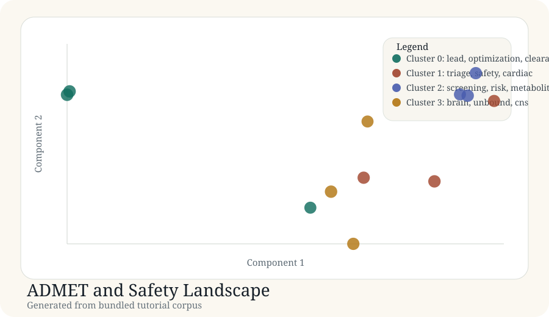

Tutorial article
ADMET and Safety Landscape
This article documents a real generated tutorial run from the bundled corpus in docs/tutorial-data/admet-safety-landscape.csv.
Background
In medicinal chemistry and preclinical support, ADMET and safety discussions are rarely one-dimensional. Teams need to distinguish clearance and exposure optimization from cardiac risk, toxicology alerts, and CNS design constraints.
Purpose
The goal is to verify that a small discovery-safety corpus can still be mapped into coherent regions that resemble real development conversations.
Data used
Source file: admet-safety-landscape.csv. The corpus contains 12 records across PK, cardiac safety, reactive metabolite screening, and CNS exposure.
| Record | Title | Year |
|---|---|---|
| admet-001 | Microsomal stability workflows for lead optimization | 2022 |
| admet-004 | In vitro hERG triage with patch clamp confirmation | 2021 |
| admet-007 | Reactive metabolite screening in discovery safety | 2022 |
| admet-010 | Brain penetration design rules for CNS projects | 2021 |
Code used
records = load_records(DATA_DIR / "admet-safety-landscape.csv") vocab, vectors, _ = build_tfidf(records) centered, _ = center_vectors(vectors) coords = project(centered, top_components(centered, 2)) labels, centroids = kmeans(vectors, 4)
Result figure

Results
| Cluster | Theme | Size | Mean probability |
|---|---|---|---|
| 0 | lead, optimization, clearance | 3 | 0.83 |
| 1 | triage, safety, cardiac | 3 | 0.82 |
| 2 | screening, risk, metabolite | 3 | 0.81 |
| 3 | brain, unbound, cns | 3 | 0.81 |
Generated artifacts
Interpretation
This scenario is useful because it shows a map aligned with medicinal chemistry decision-making. Exposure optimization, cardiac safety, broader toxicology, and CNS delivery all remain visible as separate neighborhoods rather than being collapsed into a generic ADMET bucket.